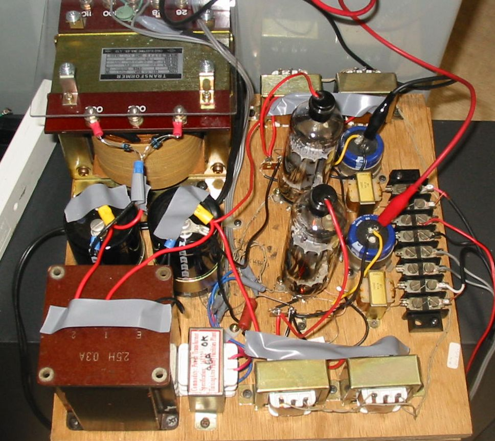
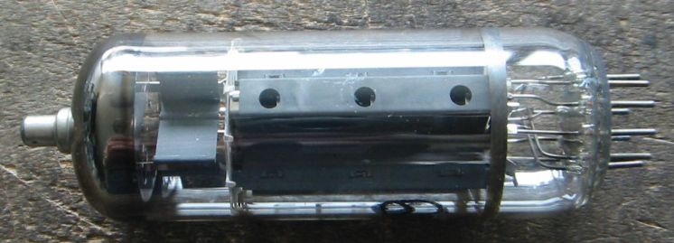
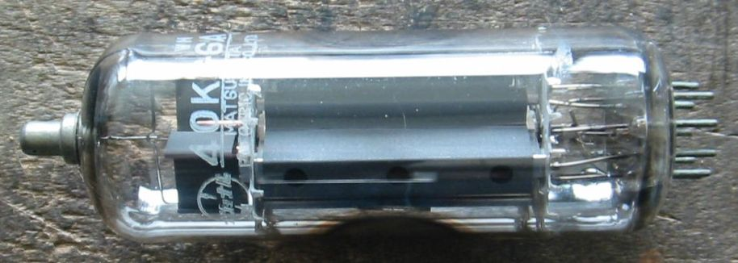
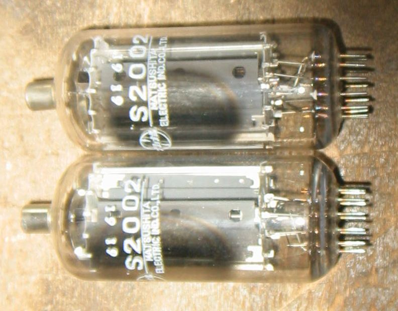
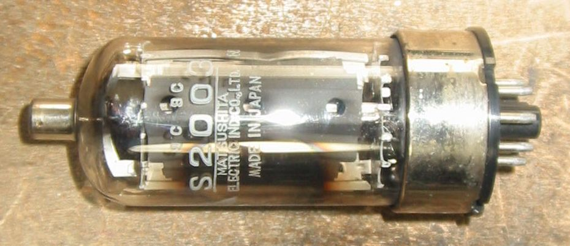

6KG6/40KG6/EL509/PL509
４０KG6Aシングル3結アンプです。
パソコンにつないで使おうと思ったので、４０KG6A３結の出力段だけです。入力トランスで10V位の電圧が得られるので、
電圧増幅段を省略しましたが、これで十分です。出力トランスが小さいので、2個ずつ使い一次側は並列、二次側直列に
して100mA程度流せるようにしました。負荷インピーダンスは計算上1.4K オームくらいになります。
シャシー加工が嫌いなせいもありますが、いつもBreadboardです。

日本ではTV受像機のトランジスタ化が急速に進み、大型のTV水平出力管が開発されませんでした。
もちろん輸出用に6KD6系の球は製造していたのですが、国内向けは12GB7あたりでおしまいになりました。
EL509(6KG6)中古品 管壁のプリントが消えてしまっているので、メーカなどはわかりませんが、前の所有者が
EL509とマジックインキで書いています。

NOS Matsushita 40KG6A/PL509

NOS Matsushita S2002 MATSUSITAのS2001は、6146B相当で松下の受信管製造技術で作った送信管といわれ、
トリオのSSBトランシーバに使われたので有名です。このS2002は6KG6/40KG6とそっくりです。電極に引き出しは、
6JS6と同じになっています。自社製のSSBトランシーバに使われたようですが、あまり知られていません。
Ef/If=6.3V/2.0A、Ep/Pp=990V/30W、Esg/Psg=275V/7.0W、Gm=14500、μ2=3.7

JUNK Matsushita S2003 この球はS2002をオクタルベースにしたもので、S2002よりも珍しいです。
かなり酷使されたようで、ガラスが黒くなっていますがまだ使えます。

TV水平出力管(欧州系)のページに戻る